Explainer document: what the project is, why it exists, what every part does, how it was built, how it works inside, what it shows, and how to answer questions about it.
The one-line answer: DataSim lets you design a database-backed system on a canvas (users, load balancer, app servers, cache, database), define the tables and the transactions, and then run it for real against an actual MySQL server with hundreds of simulated users, to see whether it is fast enough, whether the data stays correct, and exactly where it breaks, before anyone builds the real system.
The idea comes from Cisco Packet Tracer, where network students drag routers and switches onto a canvas and watch packets flow. DataSim does the same for databases: you drag components, press Run, and watch requests flow along the connections while charts, locks, errors and invariant checks update live.
read seats, check, then write seats+1) lets two students both see "59 seats used", both register, and the course ends up with 61 students. The count and reality disagree: a lost update. It happens even though every individual transaction "committed successfully". DataSim reproduces this on demand, shows the wrong numbers, then shows the fix working.| Concept | What it means | Where you see it in DataSim |
|---|---|---|
| Transaction / ACID | A group of SQL steps that succeed or fail as one unit (Atomic), keep rules true (Consistent), do not trample each other (Isolated), and survive a crash (Durable). | Every workload "transaction" runs as a real START TRANSACTION ... COMMIT; a rejected registration rolls back completely. |
| Isolation level | How much concurrent transactions can see of each other: READ UNCOMMITTED, READ COMMITTED, REPEATABLE READ (MySQL default), SERIALIZABLE. Stronger = safer but slower. | "Isolation" selector in the top bar; changes the real MySQL session setting. |
| Lost update | Two transactions read the same old value and both write back, so one change disappears. Still possible at REPEATABLE READ with plain SELECTs. | The naive strategy: overbooked sections, counters that disagree with reality. |
| Locks, strict 2PL | InnoDB locks rows being changed and holds the locks until commit (strict two-phase locking), so others wait their turn. | Lock waits chart, lock list, wait-for graph. |
| Gap / next-key locks | Locks on the "space between" index entries to stop phantom rows. Without a good index a query locks far more. | Concurrency Lab: index experiment. |
| MVCC | Readers see an older consistent snapshot instead of blocking, so readers and writers do not block each other. | Explains why plain SELECT returns a stale seat count. |
| Deadlock | Two transactions each hold a lock the other needs. InnoDB detects the cycle in its wait-for graph and kills one (error 1213); the app retries. | Transaction Stepper "Classic deadlock"; Bank Transfers template. |
| Pessimistic / optimistic / atomic | Lock first (SELECT ... FOR UPDATE); or check a version number and retry on conflict; or let one SQL statement check and write together. | Strategy variants of each transaction (naive, pessimistic, optimistic, atomic, serializable). |
| Index, query plan | An index turns a full table scan into a quick lookup. EXPLAIN shows what MySQL will do. | Advisor finding "Full table scan on section(slot)"; EXPLAIN drawer. |
| Normalization | Organising tables to remove redundancy (1NF to BCNF) using functional dependencies; sometimes redundancy is kept on purpose and guarded by constraints. | Normalization assistant; the design of DataSim's own database. |
| Constraints | PRIMARY KEY, FOREIGN KEY, UNIQUE, CHECK, generated columns: the database itself refuses bad data. | Real DDL in the schema designer; "a strategy can live in the schema". |
DataSim is a web application (a React front end and a Node.js back end) that talks to a real MySQL 8.4 server, a Redis cache and runs on one laptop with Docker. The left rail has four places: Projects, Runs, Concurrency Lab and Stepper; a green dot at the bottom shows MySQL/Redis health.
Home page. Start a blank design or one of four ready-made templates, and see every project with its last verdict (PASS/FAIL) and latency.
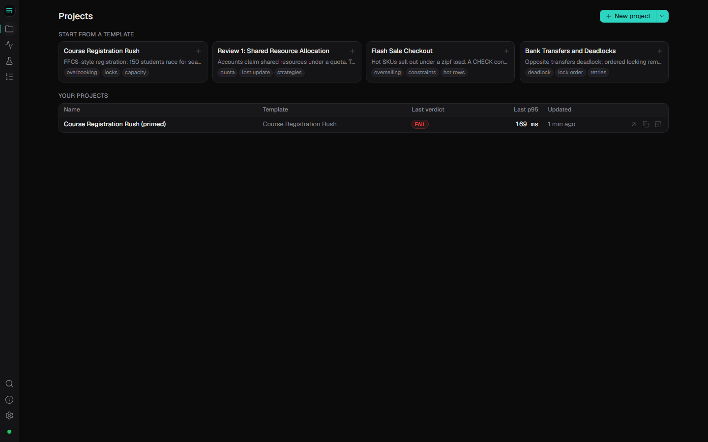
This is the heart of the product. Drag Users, Load balancer, App server, Cache and Database onto the canvas and connect them. The connection rules are enforced as you drag (for example Users cannot connect straight to the Database; a toast explains why), just like Packet Tracer. Click a component to edit its settings in the right panel: number of users and think time, app instances/workers/pool size/retry policy, cache time-to-live, database isolation level and lock timeout. Undo/redo, autosave and saved "revisions" (immutable snapshots) are built in.
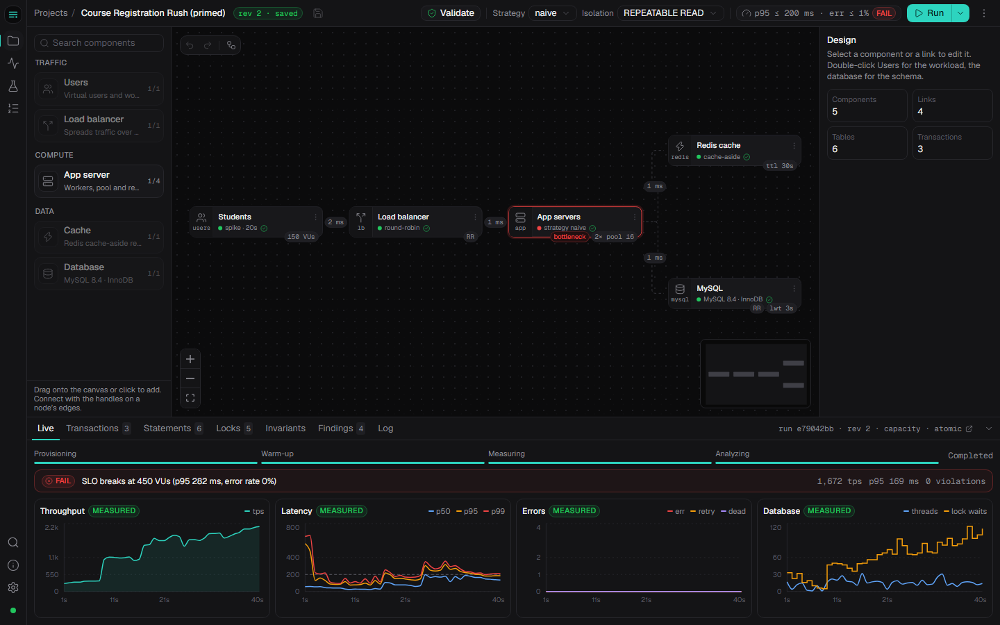
Two quick selectors in the top bar are the demo's main levers: Strategy (naive / pessimistic / optimistic / atomic / serializable) and Isolation. Run offers Load test, Capacity test and Compare strategies. While a run is active the nodes show live numbers (tps, p95, pool use, cache hit), animated dots flow along the connections, and the bottleneck component gets an amber/red border.
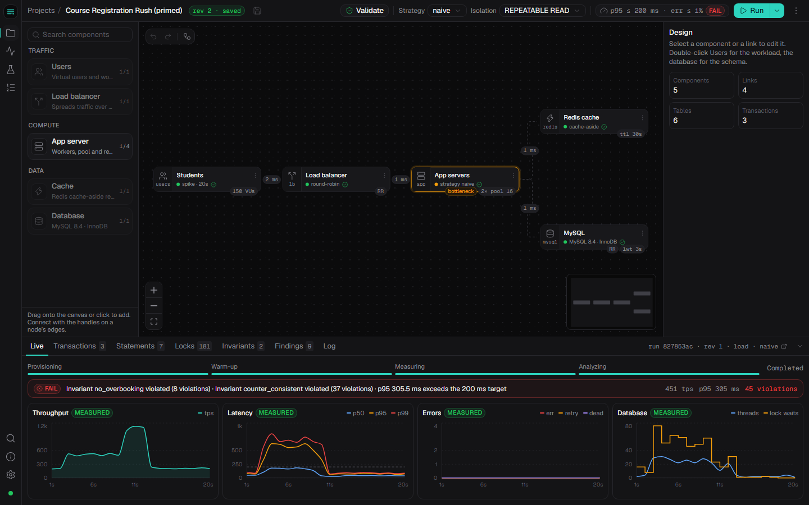
Double-click the Database node. You get an ER diagram (tables, key icons, foreign-key arrows with one/many ends), an editor for columns, types, keys, indexes, foreign keys, CHECK constraints and generated columns, and a seed generator per column (sequences, normal, zipf "popular items" distribution, names, patterns like 20BCE0001, references to parent keys). The DDL tab shows the exact CREATE TABLE statements, and Provision sandbox really creates them in MySQL and fills them with data in a few seconds. Extras: import from pasted DDL, a read-only SQL console, and a Normalization assistant.
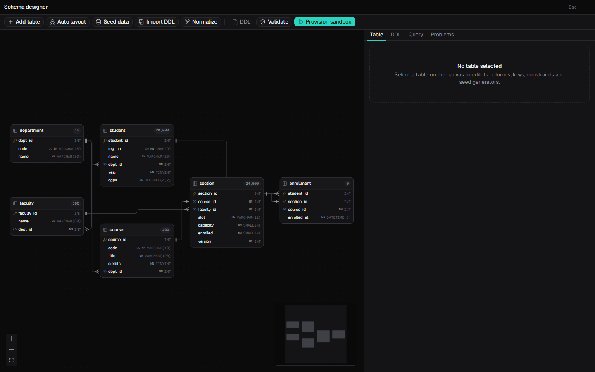
Double-click the Users node. A workload is a mix of transactions with weights, e.g. register 55%, search sections 35%, view timetable 10%. Each has parameter generators (which student, which section, popular sections chosen more often) and one or more variants (naive, pessimistic, optimistic, atomic, serializable): real SQL steps with optional bind (remember a row), guard (business rule such as "seats left?") and expect-affected (retry if the update changed 0 rows). Test once runs one instance inside a transaction that is rolled back and shows each step's rows, affected count and time: great for explaining what a strategy really does. Invariants are SQL checks that must return 0 violations, e.g. "no section has more enrollments than capacity".
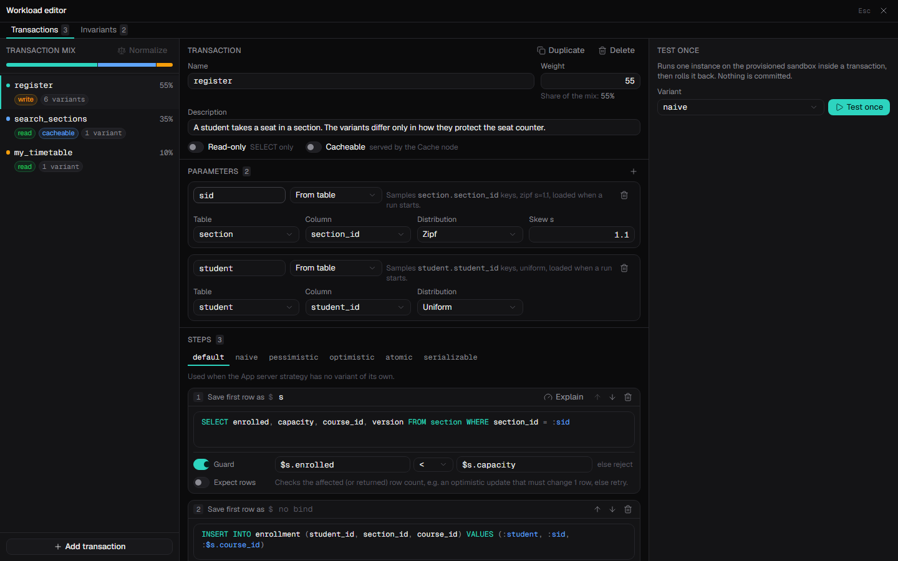
After every run: verdict against the target (PASS/FAIL with reasons), KPI cards (throughput, p50/p95/p99, committed, rejected, errors, deadlocks, invariant violations, cache hit ratio), charts, a stacked bar of where the time went for every transaction, per-statement statistics with EXPLAIN, lock waits with a mini wait-for graph, invariant results, and findings from the advisor, each with evidence numbers, a short DBMS-theory explanation and, where possible, an Apply fix button that creates a new revision to re-run. Everything exports to Markdown / CSV.
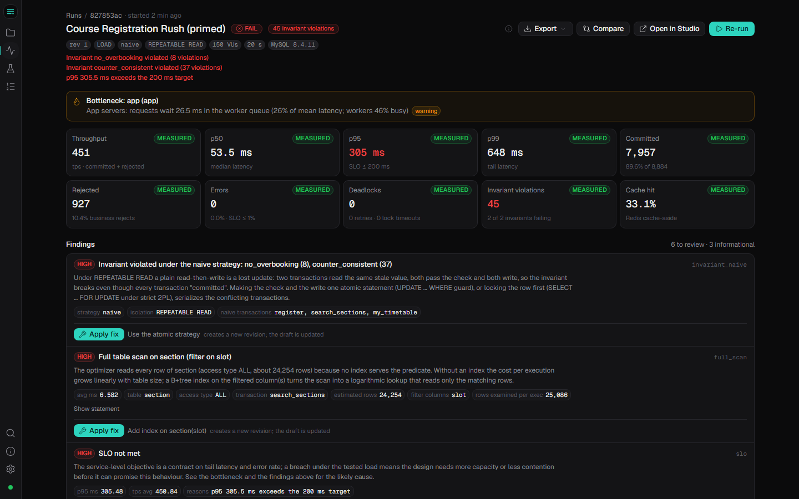
section.slot, SLO not met.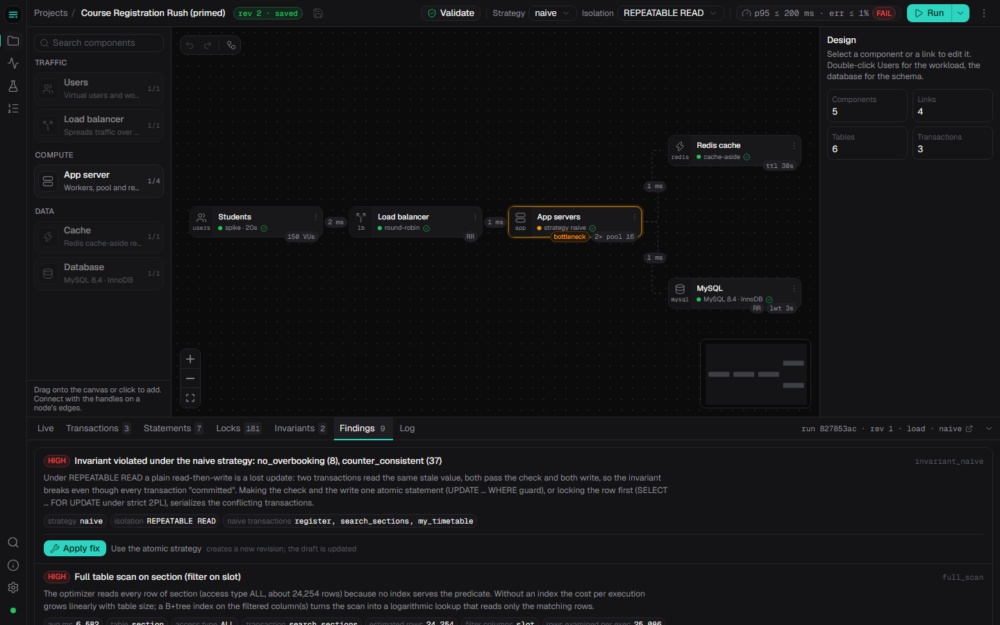
One click ramps the number of users in steps (50, 150, 300, 450, 500 in the demo) and records throughput and latency at each step. DataSim finds the knee (where adding users stops adding throughput but latency jumps), fits the Universal Scalability Law curve X(N) = λN / (1 + σ(N−1) + κN(N−1)) by least squares (σ = contention, κ = coherency cost), and prints a one-sentence verdict. The part of the curve beyond the tested load is drawn dashed and tagged PROJECTED; if no saturation was observed, DataSim says so instead of inventing a number.
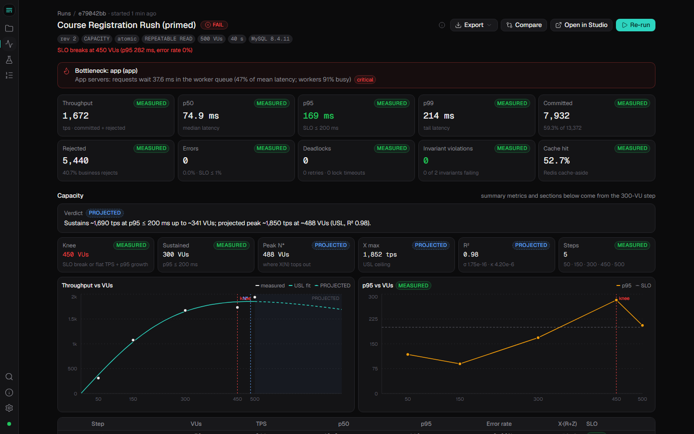
Select 2 to 5 runs on the Runs page: side-by-side metrics with green/red deltas (direction aware: lower latency is better, more throughput is better), overlaid charts, invariant matrix, which findings appeared or disappeared, and a design diff (what changed between the two revisions: settings, nodes, schema, indexes).
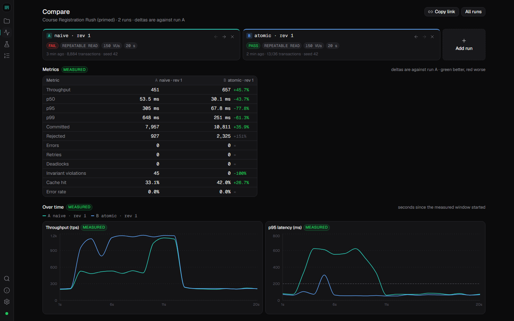
Kept from the first review because they are the clearest teaching tools. The Concurrency Lab races many clients at one shared resource under eight strategies (NAIVE, TXN_RR, SERIALIZABLE, PESSIMISTIC, OPTIMISTIC, CONSTRAINT, TRIGGER, REDIS_LEASE) and tabulates violations, retries, deadlocks and latency; it also has a lost-update experiment and an index experiment (lock footprint with and without an index). The Transaction Stepper runs two transactions statement by statement on two real connections and shows the live lock table from performance_schema and the wait-for graph; with the "Classic deadlock" scenario you press Next until MySQL reports a real error 1213 and the cycle lights up red.
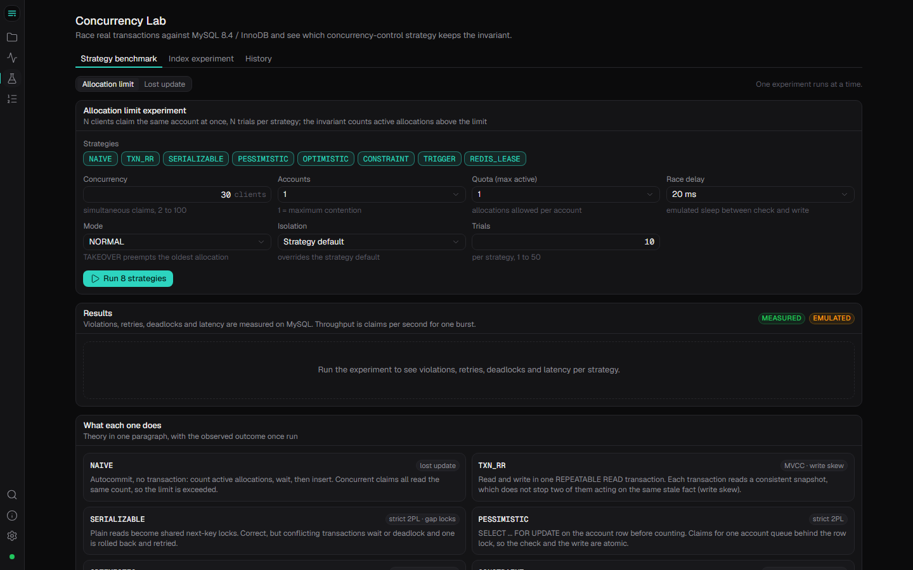
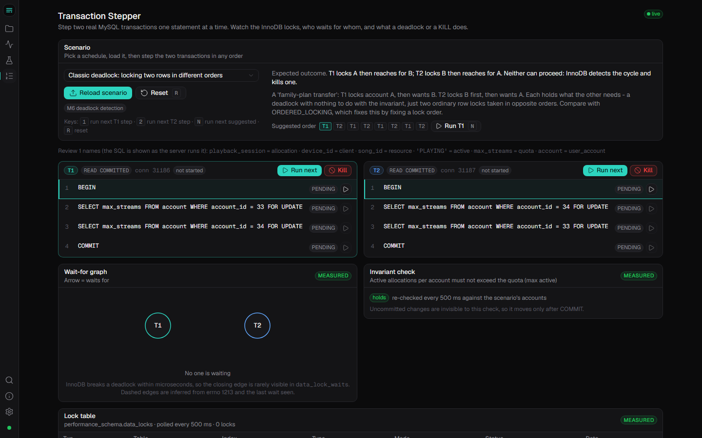
A shared package of zod schemas (the design document, schema model, workload, run report, socket events) is used by both the browser and the server, so both validate exactly the same data. The project has about 27,000 lines of TypeScript/SQL (server ≈ 6,500, web ≈ 16,000, shared ≈ 1,200 plus tests).
dsim_<id> is dropped and created; real CREATE TABLE statements are applied; data is generated from a seeded random generator (same seed gives the same data every time: reproducible), inserted in batches of 1,000 rows (100,000 rows in about 2 s).performance_schema.data_lock_waits for the wait-for graph.events_statements_summary_by_digest) and EXPLAIN each statement, run the advisor rules, detect the bottleneck, compute the verdict, and save everything in relational tables.If a statement hits a deadlock (error 1213) or lock-wait timeout (1205), or an optimistic update changes 0 rows, the app retries with back-off according to its retry policy. If a business guard fails ("no seats left"), the transaction is rolled back and counted as rejected (not an error). Each request records high-resolution timestamps at every step, so the "where the time went" bar is measured, not estimated.
| Tag | Meaning | Examples |
|---|---|---|
| MEASURED | Observed from MySQL or the real request path. | DB execution time, lock waits, deadlocks, rows examined, invariants, end-to-end latency, cache hit ratio. |
| EMULATED | An injected delay or modelled component that really runs in the request path (a real wait that holds users and creates real queueing). | Network latency between components, app processing time, the load balancer. |
| PROJECTED | A mathematical model fitted to measured data. | Capacity beyond the tested load (USL fit), drawn dashed. |
The cache is a real Redis; if Redis is not reachable, DataSim refuses to run instead of silently pretending. No placeholder data or random chart values are used anywhere.
dsim_runner that can only SELECT, INSERT, UPDATE, DELETE inside dsim_* sandbox databases: no DDL, no access to DataSim's own database.Rules look at the run's evidence: a full table scan (EXPLAIN access type ALL on ≥ 1,000 rows) → "add index on table(columns)" (one click); invariant violated under naive → use atomic or pessimistic; hot-row contention (lock waits concentrated on one key) → atomic update, sharded counter or queue; deadlocks → lock rows in a consistent order; pool starvation → bigger pool or more app instances (but not when lock waits dominate, because more connections only move the queue); low cache hit ratio; SERIALIZABLE cost. Each finding shows evidence numbers and a 2–3 sentence explanation using DBMS theory.
All numbers are from our test machine (a laptop, MySQL in Docker); exact values vary run to run, the shape is stable. Template: Course Registration Rush: 150 students, 20,000 student rows, 24,000 sections, 36 timetable slots.
| Step | What we do | What it shows (typical) |
|---|---|---|
| 1. Naive | Strategy = naive, Run | ≈ 450 tps, p95 ≈ 300 ms, FAIL, ≈ 45 invariant violations: overbooked sections and wrong counters (lost update at REPEATABLE READ). Bottleneck flagged on the app servers. |
| 2. Atomic | Strategy = atomic, Run | ≈ 650 tps, p95 ≈ 68 ms, 0 violations, PASS. One statement checks and writes under one row lock. |
| 3. Compare | Runs → select both → Compare | Throughput +46%, p95 −78%, violations −100%, charts overlaid, "what changed: strategy naive → atomic". |
| 4. Advisor | Findings → Apply fix (add index on section(slot)) → Re-run | Statement average ≈ 6.5 → 1.8 ms; rows examined ≈ 25 million → ≈ 1.7 million; finding disappears. |
| 5. Capacity | Run → Capacity test (50…500 users) | Knee at 450 users; sustains ≈ 1,690 tps at p95 ≤ 200 ms up to ≈ 340 users; projected peak ≈ 1,850 tps (USL, R² ≈ 0.98). |
| 6. Review 1 tools | Lab: eight strategies; Stepper: classic deadlock | NAIVE and TXN_RR violate; PESSIMISTIC, OPTIMISTIC, SERIALIZABLE, CONSTRAINT, TRIGGER, REDIS_LEASE do not. Stepper shows a real errno 1213 and the wait-for cycle. |
| Template | Teaches |
|---|---|
| Course Registration Rush (flagship) | Overbooking / lost update, hot rows (popular sections), cache, missing index, capacity knee. Schema: department, student, faculty, course, section, enrollment (with a composite foreign key as controlled redundancy). |
| Review 1: Shared Resource Allocation | The exact Review 1 schema: user_account, client, resource, allocation, operation_event; quota violations; composite FK; generated column + UNIQUE as a concurrency strategy. |
| Flash Sale Checkout | Overselling hot products; a CHECK (stock >= 0) is itself a concurrency strategy. |
| Bank Transfers and Deadlocks | Unordered locking deadlocks; ordered locking (lowest id first) removes deadlocks; money conservation invariant. |
DataSim stores its own state in a MySQL database (datasim), designed in 3NF / BCNF:
| Table | Purpose and key |
|---|---|
project, project_draft | A design and its autosaved current draft. PK project_id. |
design_revision | Immutable snapshots. PK (project_id, revision_no), plus a second candidate key (project_id, content_hash) so identical designs are stored once. |
run | One execution: settings, totals, verdict. FK to the exact revision; self-FK for strategy-comparison children. |
run_sample, run_txn_stat, run_statement_stat, run_lock_wait, run_invariant, run_finding, capacity_point, capacity_fit | Child tables keyed by (run_id, …) with ON DELETE CASCADE: per-second samples, per-transaction stats, per-statement digests, lock waits, invariants, advisor findings, capacity steps, USL fit. |
run (written once at the end) so the Runs list does not aggregate thousands of rows; this is documented and never updated afterwards.| Layer | Choice and why |
|---|---|
| Database | MySQL 8.4 / InnoDB (committed in Review 1): row locks, MVCC, selectable isolation, FKs, CHECK constraints, generated columns, performance_schema lock tables; Redis 7 as the real cache; both in Docker. |
| Server | Node.js, TypeScript, Express, Socket.IO (live events), mysql2 (real pools), ioredis, zod. The random generator, data generators, Universal Scalability Law fit and normalization algorithms are hand-written (no heavy libraries). |
| Web | React + Vite + Tailwind, React Flow (canvas), zustand + zundo (state and undo/redo), recharts, CodeMirror (SQL editor), Radix (accessible components). Fonts bundled: works offline. |
| Quality | vitest, supertest (API against the real MySQL), Playwright end-to-end tests in a real browser. |
npm run demo / npm run doctor.| Check | Result |
|---|---|
| Unit and integration tests (shared / server / web) | 19 / 183 / 192 passing (server tests run against the real MySQL and Redis) |
| End-to-end browser flows (Playwright) | 7 passing: naive-vs-atomic-vs-compare, schema designer, workload editor, capacity + USL, index advisor, Lab, Stepper |
| Type checking and production build | Clean |
| Browser console | No errors on any screen in the e2e flows |
| Independent review | Whole demo script run step by step; numbers in the UI matched the API |
Review 1 promised a "focused learning simulator such as Cisco Packet Tracer" for concurrency in MySQL/InnoDB. v2 is a return to that promise, with real tables:
| Review 1 item | Where it lives now |
|---|---|
| Strategies: naive, transactions, serializable, pessimistic, optimistic, unique constraint, trigger, Redis lease | Concurrency Lab (all eight) + strategy variants + schema forks (CONSTRAINT) |
| Transaction Stepper, Concurrency Lab | Kept, redesigned: Stepper and Concurrency Lab pages |
| Simulation control room with virtual users | Studio runs (1–500 virtual users, load patterns) |
| Lock and wait-for views, invariant checks | Stepper, report lock waits and graph, invariants |
| Entities USER_ACCOUNT, CLIENT, RESOURCE, ALLOCATION, OPERATION_EVENT | Template "Review 1: Shared Resource Allocation" (exact keys and constraints) |
| EXPERIMENT_RUN, persisted experiments, CSV/Markdown export | run + child tables; exports in the report and the Lab |
Partial / changed items (stated honestly in docs/REVIEW1_TRACEABILITY.md): pause/resume of a crowd is replaced by start/cancel; the v1 live lease-reaper service was retired; there is no per-account event timeline view.
| Question | Answer |
|---|---|
| Why real tables instead of a simulation? | A simulator that models locks in code only shows the author's model. Real tables give real indexes, real optimizer plans, real lock waits and real deadlocks. (Version 1 stored rows as JSON blobs, so it could not show any of that.) |
| How is latency measured, and what is emulated? | Timestamps at queue, link, app, pool and DB phases. Database time and end-to-end latency are measured; network delay, app processing time and the load balancer are emulated as real waits in the request path. Capacity beyond the tested load is projected and labelled so. |
| Why does naive overbook even at REPEATABLE READ? | The plain SELECT reads an old snapshot (MVCC); two transactions both pass the check and both write: a lost update. The fix is to make check-and-write atomic or to lock the row first. |
| How does the index advisor work? | EXPLAIN of every statement plus rows-examined statistics; a full scan over ≥ 1,000 rows triggers "add index on the filtered columns", applied as a new revision and re-run. It is rule-based, not a cost model. |
| What is a deadlock and how is it handled? | A cycle in the wait-for graph. InnoDB detects it, rolls back one victim (error 1213), the app retries; consistent lock ordering prevents it (Bank template). |
| What is the USL? | X(N) = λN / (1 + σ(N−1) + κN(N−1)): σ models contention, κ coherency cost; the peak is at N* = √((1−σ)/κ). We fit σ, κ to measured steps and mark the projection dashed. |
| How is user SQL kept safe? | Restricted MySQL user on sandbox databases only, verb whitelist, no multi-statements, bound parameters, DDL only generated by DataSim. |
| Limitations? | One MySQL node (no replication); load generator, API and MySQL share one laptop, so absolute numbers are relative, not benchmarks; emulated network/app are models; advisor is rule-based; bounded workload (≤ 500 users); run-to-run variance is real (the shape is stable, not the exact numbers). |
| Future work? | Read replica with GTID replication and replication-lag measurement; PostgreSQL adapter; cost-based index recommendations. |
A longer list of 25 viva questions with answers is in docs/VIVA.md.
npm ci npm run demo # starts Docker (MySQL + Redis), API and web; prints http://localhost:5173/DataSim/ npm run doctor # checks Docker, ports, MySQL, performance_schema, Redis, runner user npm run demo:prime # optional: pre-runs the demo so reports exist as a fallback npm test # unit + integration tests npm run e2e # browser tests
The 6–8 minute live demo script (exact clicks, talking points, expected numbers, fallback) is docs/DEMO.md.
| Virtual user (VU) | A simulated person who repeatedly picks an action, waits (think time) and repeats. |
| TPS | Transactions per second (throughput). |
| p50 / p95 / p99 | Latency below which 50% / 95% / 99% of requests finished; p95 = "slow-end experience". |
| SLO | Service-level objective: a target such as "p95 ≤ 200 ms and errors ≤ 1%". |
| Invariant | A rule that must always hold, checked by SQL (0 violations = pass). |
| Connection pool | A fixed set of reusable database connections; when all are busy, requests wait (pool starvation). |
| Knee | The load where throughput stops growing while latency rises sharply. |
| Revision | An immutable saved snapshot of a design; every run records which revision it ran. |
| Zipf distribution | "A few items are very popular": models the hot sections everyone wants. |
| Sandbox | The throw-away MySQL database DataSim creates for a run. |